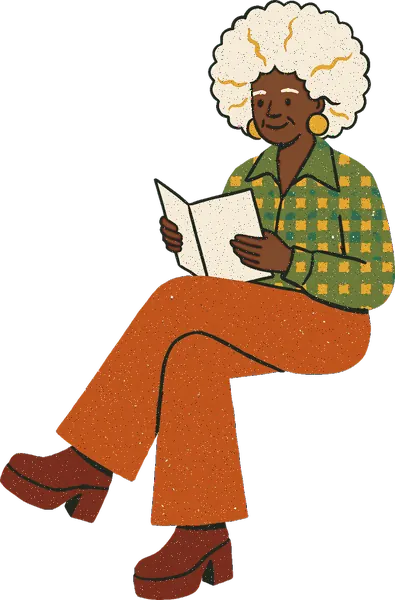
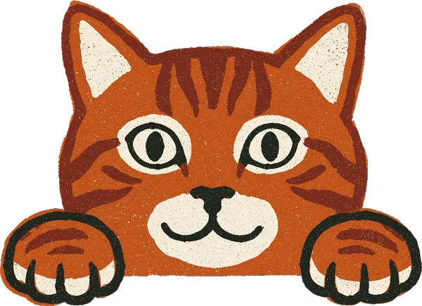
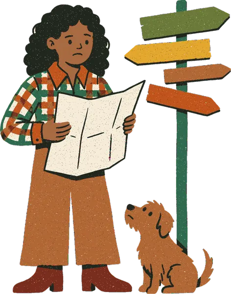

Phones get no motion and no person in the first screen. A static 36px sun sits on the key-dates card. After that, one small static piece sits at each section break the voter scrolls past, and the town shows in full at the bottom of every page. The home page's first load gains 17.8 KB of art and 0 px above the deadline card.
Spec: mobile-visuals.md (same folder)Proposal only: nothing in src/ or public/ changedDecision 1 gates the build
+17.8 KBNew art in the home page's first screen (the sun). 0 px added above the key-dates card, which stays at y 568.
97.4 KBNew art on a full home scroll (sun, reader, cat), plus 12.7 KB when the install card shows. The footer adds 0 new bytes.
+149 pxHome page height at 375px (6,129 to about 6,278): zigzag 40, heading wrap 29, footer 80.
0Animations below 64rem. The hero walk stays desktop only, and reduced-motion users see the same phone page as everyone else.
Decide
The recommended answers are pre-selected. Change any of them, add a note, then copy the result as markdown. Decisions 3 and 4 also switch the mockups below.
Before and after, on a phone
These frames use the real art files from public/brand/site/, the site's colours and type sizes, and real page text, measured at 375×812 on 2026-10-11. The fonts fall back to your system's sans serif, so line breaks can differ by a word. Numbered dots match the placements list.
Phone widthCoverage figure and inner pages follow decisions 3 and 4.
Home, first screen
The first 812px a voter sees. Today it has no art apart from the speckled masthead.
Before today
DonateChoose your district
Sunday, October 11, 2026Election Day: Tuesday, November 3
Florida candidates, in their own words.
See the races we cover and what each candidate says, quoted word for word from their own campaign sites, with a link to every source. The same questions and the same rules for every candidate. No ZIP, no account, no agenda.
BallotCandidatesNews
After this plan
DonateChoose your district
Sunday, October 11, 2026Election Day: Tuesday, November 3
Florida candidates, in their own words.
See the races we cover and what each candidate says, quoted word for word from their own campaign sites, with a link to every source. The same questions and the same rules for every candidate. No ZIP, no account, no agenda.
BallotCandidatesNews
What changes
1Sun, 36×36, on the key-dates card's top-right corner (sticker-sun-xs.webp, 17.8 KB, lazy). At 375px it sits at x 303–339, y 544–580. It rises 24px into the 32px gap under the lede (8px clear of it) and comes 12px into the card's 16px padding (4–7px clear of the first line).
–0 px added. The card stays at y 568 (375), 495 (430) and 641 (320). Its 1,296 px² against the lede's ~66k px² keeps the LCP element text.
–No person above the fold (decision 2). The hero walk stays lg only, and nothing goes on the masthead (no second sun).
Same as today: the H1, the lede, the masthead and the key dates. No motion.
Home, further down
From the end of the ballot list (y ≈ 3,196) to the footer. The news rail is collapsed to a placeholder here. It is unchanged and gets no art.
Before today
Hillsborough ballots: 4 judges of the 2nd District Court of Appeal (about this court’s judges)
Orange ballots: no appeals court judges this year
The Florida Division of Elections lists every judge on the 2026 ballot. Some county ballots also have a circuit judge race, which we don’t cover either.
Add your U.S. House race
Your U.S. House race isn’t in the list above, because it depends on where you live. Give us your ZIP and we’ll add it — or skip it and read the rest. We use it to find your district and keep only the district itself, never your ZIP.
Your ZIP code33130
Add my House race
Full statewide coverage isn’t available yet. Every Florida voter gets the statewide races and amendments; U.S. House and county races are only for Miami-Dade, Broward, Hillsborough and Orange counties so far.
or choose your district
What this guide covers
Every Florida voter
5 statewide races (4 with a full brief so far) and 3 amendments, the same for everyone, whatever your ZIP or party.
Miami-Dade, Broward, Hillsborough and Orange counties
The U.S. House races, and the county commission, school board, Orange County mayor and Orange County clerk races. Add your ZIP above for your House race. Your county’s sample ballot says which commission and school board seats are yours.
Not covered
Florida House and Florida Senate seats, judges (retention questions and other judicial races), county and city ballot questions, city races, special districts such as soil and water conservation and community development districts, and local races in other counties. Your county Supervisor of Elections has your official sample ballot. What we don’t cover
Every candidate in a race we cover gets the same questions and the same rules. How we stay fair
Florida election news
Statewide and county stories and official notices, newest first.
All FloridaStatewideMiami-DadeHillsboroughOrange
news items: unchanged, no art
Get the app
Add Know Your Vote to your home screen: tap the Share button, then “Add to Home Screen”.
We quote what each candidate says, in their own words. You decide. How we stay fair · Privacy
After this plan
Hillsborough ballots: 4 judges of the 2nd District Court of Appeal (about this court’s judges)
Orange ballots: no appeals court judges this year
The Florida Division of Elections lists every judge on the 2026 ballot. Some county ballots also have a circuit judge race, which we don’t cover either.

2
Add your U.S. House race
Your U.S. House race isn’t in the list above, because it depends on where you live. Give us your ZIP and we’ll add it — or skip it and read the rest. We use it to find your district and keep only the district itself, never your ZIP.
Your ZIP code33130
Add my House race
Full statewide coverage isn’t available yet. Every Florida voter gets the statewide races and amendments; U.S. House and county races are only for Miami-Dade, Broward, Hillsborough and Orange counties so far.
or choose your district
What this guide covers

33
Every Florida voter
5 statewide races (4 with a full brief so far) and 3 amendments, the same for everyone, whatever your ZIP or party.
Miami-Dade, Broward, Hillsborough and Orange counties
The U.S. House races, and the county commission, school board, Orange County mayor and Orange County clerk races. Add your ZIP above for your House race. Your county’s sample ballot says which commission and school board seats are yours.
Not covered
Florida House and Florida Senate seats, judges (retention questions and other judicial races), county and city ballot questions, city races, special districts such as soil and water conservation and community development districts, and local races in other counties. Your county Supervisor of Elections has your official sample ballot. What we don’t cover
Every candidate in a race we cover gets the same questions and the same rules. How we stay fair
Florida election news
Statewide and county stories and official notices, newest first.
All FloridaStatewideMiami-DadeHillsboroughOrange
news items: unchanged, no art
4
Get the app
Add Know Your Vote to your home screen: tap the Share button, then “Add to Home Screen”.
We quote what each candidate says, in their own words. You decide. How we stay fair · Privacy
What changes
2Seated reader, 58×88, on the zigzag (sit-divider-sm.webp, 32.9 KB). The wrapper gets mt-[28px] mb-[12px], which adds 40px. The reader sits about 12px below the end of the list (art never goes over it) and about 16px above the House heading.
3Cat, 88×64, over the coverage card (pet-cat-peek-sm.webp, 46.7 KB). Its head rises 56px and its paws dip 8px into row 1's padding. The heading gets pr-[108px] and wraps below 402px (+29px). Decision 3 can swap in the peeking man.
4Install badge, 47×48, in the card's flow, left of "Get the app" (sticker-kyv-badge-xs.webp, 12.7 KB). The card only renders on iOS Safari, or on Android Chrome when it offers install. Adds 0 to 20px.
5The whole town, 375×159 instead of 79 (footer-town-strip-sm.webp, already fetched, so 0 new bytes). Capped at 184px from about 434px wide; from sm up the crop is today's.
Untouched: the ballot list, at-a-glance tiles, news rail, House form and the reminder envelope (40px, shown when reminders are live; not live today, so it isn't in these frames).
About
Scrolled to "Who pays for it" (y ≈ 900). The first screen of /about does not change.
Before today
Who pays for it
Readers, through donations. No candidate, party, or campaign funds Know Your Vote or reviews what we publish.
Donations go through Zeffy, which charges us no fees. Know Yours Inc is a nonprofit but not a 501(c)(3), so donations are not tax-deductible.
Get in touch
Spotted a mistake, a missing source, or something that reads as slanted? Tell us. Corrections are the point. The same address works for press and everything else: info@knowyour.vote.
The official word
We’re not a government site. For your registration, your polling place, and your sample ballot, your county Supervisor of Elections and the Florida Division of Elections have the final say. If we ever disagree with them, they’re right.
After this plan
Who pays for it
Readers, through donations. No candidate, party, or campaign funds Know Your Vote or reviews what we publish.
Donations go through Zeffy, which charges us no fees. Know Yours Inc is a nonprofit but not a 501(c)(3), so donations are not tax-deductible.
Get in touch
8
Spotted a mistake, a missing source, or something that reads as slanted? Tell us. Corrections are the point. The same address works for press and everything else: info@knowyour.vote.
The official word
We’re not a government site. For your registration, your polling place, and your sample ballot, your county Supervisor of Elections and the Florida Division of Elections have the final say. If we ever disagree with them, they’re right.
What changes
8Dog, 30×56, beside "Get in touch" (pet-dog-sit-xs.webp, 9.4 KB, +27px). It sits beside the heading only, never beside the paragraph or the email link. The 90px gutter dog from 1400px stays as it is.
5The whole town in the footer (+80px at 375, 0 new bytes).
–No about-neighbors on phones. At full width it would be 327×219 and 167.7 KB, loading with the page. A ~750w resize could come later.
Decision 4B removes the dog. The footer change applies either way.
News, header
The /news first screen. It stays exactly as it is: news items, the /news header and NewsFeed's empty states carry no art.
Before today
DonateChoose your district
Electoral news
A calm digest of election news and official sources, no hot takes. Statewide by default — pick a county to add its items.
Where the news comes from
CountyStatewide only
IssueAll issues
Show news
news item
BallotCandidatesNews
After this plan (identical)
DonateChoose your district
Electoral news
A calm digest of election news and official sources, no hot takes. Statewide by default — pick a county to add its items.
Where the news comes from
CountyStatewide only
IssueAll issues
Show news
news item
No change by rule: no art in the /news header, news items or empty states
BallotCandidatesNews
What changes
–Nothing in the header. design.md keeps art out of news slots. A drawing beside a filtered empty state ("nothing for this county") could also read as a finding.
5Only the footer changes, at the bottom of the page (y ≈ 3,644): the whole town, +80px at 375, 0 new bytes.
Race, candidates, candidate, measure, privacy and terms pages work the same way: footer only, 0 new bytes.
404
The whole page at 375×812. Today it is a heading and a link in an empty screen.
Before today
DonateChoose your district
We couldn’t find that page
Check the address, or start from the races we cover.
See the races we cover
BallotCandidatesNews
After this plan
DonateChoose your district

6
We couldn’t find that page
Check the address, or start from the races we cover.
See the races we cover
BallotCandidatesNews
812px: end of the first screen
What changes
6Spot, 94×120, on its own row above the heading (error-404-funk-sm.webp, 55.7 KB, lazy, in view). The heading stays the largest text.
5The whole town in the footer.
–Height: together they take the page from 812 to about 864px at 375×812, and add 0 at 430×932. "See the races we cover" stays in the first screen.
–LCP: the taller footer strip may become the 404's LCP element. It may already be today (29.6k px² against the heading's ~24k). The 404 is not a landing page, so this is accepted.
Decision 4B removes the spot. The footer change applies either way.
Placements
Each phone piece is a second <Art> or <LedgeArt> with lg:hidden, next to the existing hidden lg:block desktop piece. Art takes a fixed px height, so one element cannot be responsive, and the hidden twin's lazy image never loads. Thumbnails below are at their phone size.
Inside <aside aria-label="Key dates"> (already relative), directly before the 56px lg sun.
The lede box ends about 8px above it. The card's first line clears it by about 4–7px. That clearance is vertical and in px, so the first <p> gets no phone right padding.
Rewrite the "lg+ only" comment to describe the phone twin.
Beside the heading only, never beside the paragraph or the email link. The 1400px+ gutter dog stays.
Docs and comments in the same PR
docs/design.md "Site illustration layer": add the approved phone line (decision 1).
Rewrite the comments that encode the old phone rule: Art.tsx header, SectionDivider.tsx line 4, SiteFooter.tsx, ReminderSignupCta.tsx ("the one piece of art that also shows on phones"), not-found.tsx, globals.css lines 165–172 (the speckle texture stays off phones; only the reason text changes), and the InstallCard, CoverageSummary, DeadlineBanner and zigzag comments.
placement-map.md: replace "6,770px" with 6,129px (measured 2026-10-11) and list the phone slots.
Budget
KB means KiB, measured from the files in public/. Chrome's lazy-load margin is about 1,250px on 4G and 2,500px on slower links.
Page
New art
What loads
Height change
Home, first load (4G)
17.8 KB
Sun only, plus ~6 KB of existing textures and masks
All art on the phone home page, counting the existing strip (129.8), envelope (10.7, when reminders are live) and masthead (~6), comes to about 256 KB at most. The desktop hero walk alone is 252 KB.
The footer adds 0 new bytes, and on 402–440px @3x iPhones it may save about 316 KB per view (confirm in Safari Web Inspector before claiming it).
Layout and paint
CLS 0: Art reserves width and height, and the footer box is sized by aspect ratio.
LCP stays text on every page, except possibly the 404.
No first-screen art is larger in area than the lede or the H1.
Motion and limits
Motion: none below lg
Every phone piece is a still image with no animation, transition, hover effect or tilt.
HeroRotator, its CSS module, hero-walk.ts and scripts/verify-hero-walk.ts stay untouched, along with the 1x1 blank <source> below 64rem.
With no phone motion, prefers-reduced-motion needs no new branch.
All art scrolls with the page, so nothing sits in the fixed bottom nav's thumb zone, and nothing new takes a tap or a tab stop.
Ground rules
Art's defaults only: loading="lazy" decoding="async". Never eager or fetchPriority.
Every clearance is bracketed px. On this scale mt-7 is 48px, -top-5 is −24px and h-8 is 64px.
No negative left or right offsets, so there is no sideways scroll at 320px.
No new client component, no new image files, and no sm/md gates except the footer's.
Do not
Put the hero walk, any walker or any rotator frame on phones.
Put a person in the phone first screen (unless decision 2 is B), or add a second sun on the masthead.
Put art above the key-dates card, or anything that moves it off y 568 at 375px.
Put art in, over or beside the ballot list (y 1106–3196), the at-a-glance tiles, the news rail, NewsFeed or its empty states, the /news header, or race, candidates, candidate and measure pages. No art beside a candidate, a verdict or a comparison.
Use band-coast or band-horizon on phones (they would become the LCP element), or about-neighbors below lg.
Use hang-masthead or lean-card-side on phones.
Use rem clearances, or change the footer crop at sm and up.
Touch the reminder envelope.
How the two specs were merged
Both judges chose Design 2 (section rhythm on edges). They agree on six of the eight placements, down to the pixel. Where they differed, the call went to neutrality first, then performance, then the stricter layout rule.
Point
Judge 1
Judge 2
Call
Coverage-card figure
Cat, 64px (46.7 KB, heading wraps below 402px)
Peeking man, 56px (31.6 KB, one-line heading from 375px)
Cat. Neutrality outranks performance. On a phone, the man's face would be the largest on the home page, and a second person at a different size from the seated reader. The cost is +15.1 KB and +29px at 320–401px. The man is option 3B.
Install badge
48px in flow, left of "Get the app"
40px absolute across the top border, rotate-6
48px in flow, no tilt. It never overlaps the block above or the card's own text, and it reads as an app icon. The cost is 0–20px, only when the card renders.
Sun classes
-top-[24px] right-[12px]
-top-5 right-3
Bracketed px. Same values, written so nobody reads the custom scale as Tailwind's.
Footer ratio below sm
aspect-[1200/509]
aspect-[2400/1018]
aspect-[1200/509]. The ratios are the same; this one matches the served file.
design.md phone line
A closed list of pieces
A general rule with size ranges
A closed list, plus the general clauses. A closed list is stricter, so any new phone piece needs a design.md change.
/methodology
Lowest priority
First to drop
Include it, flagged first to drop. Decision 4 lets you drop it.
Verify widths
Adds 402 and 1024
Adds 360 and 390
Use both lists. 402px is where the cat's heading stops wrapping, and 1023/1024 is the lg edge.
Verify
Layout
Loading
Follow-ups (not this PR)
192px -xs files for sit-divider, pet-cat-peek and error-404-funk: about 45–60 KB saved.
A ~750w phone file for the footer strip.
Decision 2C: a static row of eight equal-size walkers from ~8 KB crops.
A ~750w about-neighbors (about 60–70 KB), if a wide /about piece is wanted on phones.
Measured on the local dev server at 375×812 on 2026-10-11: home 6,129px tall, key-dates card at y 568, ballot list y 1106–3196, coverage heading y 3779, footer strip 375×79. The art loads from ../../../public/brand/site/, so keep this file in docs/design/mobile-visuals-2026-10-11/.